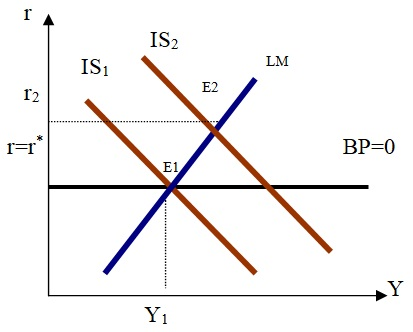
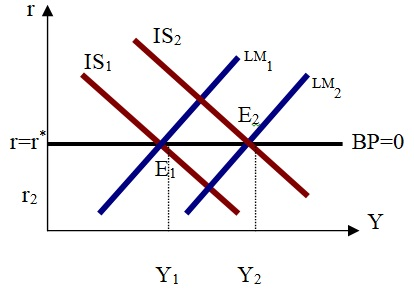

Случай абсолютной мобильности капитала при режиме плавающих валютных курсов.
Фискальная экспансия. При сдвиге IS в IS2 равновесие в точке Е2, но в этой точке наши процентные ставки выше. Поэтому последует приток капитала и складывающееся в результате положительное сальдо платежного баланса вызовет удорожание нашей валюты. Удорожание валюты означает утрату конкурентоспособности. Кривая IS начнет смещаться в исходное положение. Так что бюджетная экспансия при плавающем валютном курсе никак не повлияет на объем выпуска. Это приводит лишь к удорожанию нашей валюты.

Денежная экспансия. Кривая LM перемещается в положение LM2. В точке Е1 денежный и товарный рынок находятся в равновесии, но наши процентные ставки ниже мировой, следовательно капитал покидает страну. Платежный баланс сводится с дефицитом, а валютный курс обесценится. Обесценение валюты приводит к росту конкурентоспособности нашей продукции.
Возрастет чистый экспорт, и, следовательно, IS смещается вправо и вверх, до тех пор, пока наши процентные ставки не сравняются с мировой, а обесценение валюты выведет нас на более высокий уровень дохода. Таким образом, денежная экспансия срабатывает через увеличение чистого экспорта.

Исходя из сказанного, можно заключить, что выбор методов воздействия государства на экономику в открытой системе зависит от режима регулирования курса национальной валюты.